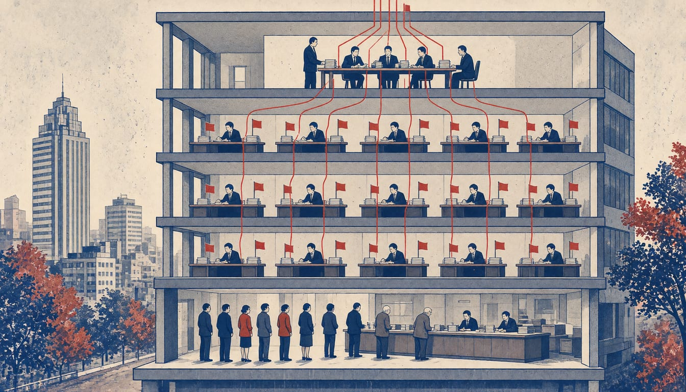

Leaked Deutsche Bank files show $582m in flagged Epstein transactions
The cache of 15 million records is more than double the sum named in a US Senate investigation. It comes as the bank faces a September order from the regulator over its money laundering monitoring systems.

A consortium of international news outlets published more than 15 million internal Deutsche Bank records on Tuesday, including nine million emails and financial crime reports. The files list about $582 million, roughly €531 million, in transactions linked to Jeffrey Epstein that were flagged internally as suspicious. That is more than double the amount previously identified in US Senate investigations.
The bank has paid €18.6bn since 2012 to settle cases over market manipulation, Russian money laundering, weak controls and mis-selling. The leaked emails indicate that senior executives approved Epstein as a client despite his conviction. They kept his accounts open after warnings about the activities of Ghislaine Maxwell. He banked there from 2013 to 2018. Deutsche Bank says it invested €7bn directly in its control environment between 2019 and 2025. It points to record profits in 2025, saying it is a different bank today.
The Financial Times reports that Deutsche Bank planned to expand its Russia business under chief executive Christian Sewing. It says the plan over-ruled the compliance team's fears about the Kremlin-connected clientele as geopolitical risks grew. The revelations sent the bank's shares down by up to 6.2 percent in the morning, dropping below the 31-euro mark. In the early afternoon they traded at 31.59 euros, about four percent down. In August, an investigation by US Senator Ron Wyden had identified $250 million in suspicious Epstein-linked wire transfers.
"Rest assured that we are investigating this," Sewing told the newspaper Handelsblatt, in his first extensive comment on the accusations. German Finance Minister and Vice Chancellor Lars Klingbeil demanded the bank clarify with full transparency how it has remedied its failures. The bank, he said, is now responsible for preventing such control deficiencies effectively in future.
BaFin said in October that on 15 September it had ordered Deutsche Bank to remedy deficiencies in its data processing systems. It set new deadlines for the work. The systems are used to monitor transactions for the prevention of money laundering and terrorism financing. The Die Linke group in the Bundestag argues the tools to hold managers to account already exist. BaFin and the European Central Bank, the party said on Bluesky, can fine the bank, stop dividends and bonuses, or ban responsible managers from their activities. The question, Die Linke said, is whether they choose to use them.